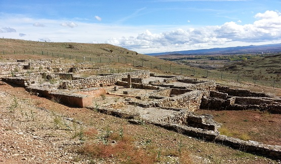
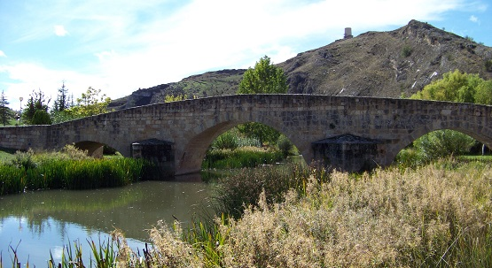

|
La Uxama celtibérica se conoce por los textos antiguos, las monedas que acuñó y las necrópolis excavadas, pero lamentablemente no quedan pruebas evidentes en la ciudad. En la Segunda Edad del Hierro era un oppidum arévaco, pero se desconoce la ubicación de su hábitat, aunque son visibles algunos restos de viviendas y tramos de muralla talladas en roca datados en esta época. La acuñación de monedas es uno de los aspectos mejor conocidos en Uxama; sus piezas corresponden a bronces con jinete y la leyenda Uxamus. Las monedas indígenas halladas en las excavaciones de la ciudad señalan que mantenía relaciones económicas con la zona oriental de la Meseta y el Valle del Jalón. Sobrevivió a las Guerras Celtibéricas, se romanizó y Uxama pasó de ser una civitas pergrina a convertirse en municipio latino. El asentamiento romano de Uxama Argaela esta emplazado sobre una amplia meseta, delimitada por la hoz del río Ucero; gozando de una magnífica situación para las comunicaciones con otros centros urbanos, tanto en época celtibérica como romana.
Tras su activa participación en las Guerras Celtibéricas 153-133 a.e.c, es de nuevo citada junto a otras ciudades celtibéricas que tomaron partido por Sertorio. La ciudad fue destruida por Pompeyo en el 72 a.e.c. Posteriormente en el siglo III, aparece reseñada como mansión por la que pasaba la vía romana, que desde Caesaraugusta se dirigía a Asturica, por el valle del Duero, situada entre Voluce (en el entorno de Calatañazor) y Clunia (Peñalba de Castro, Burgos) y con otros centros de gran importancia como Numancia. De la ciudad partían vías secundarias, en dirección sur y suroeste, que le comunicaban con otras ciudades del propio Convento Jurídico Cluniense, al que pertenecían. En la época bajoimperial se mejoran algunos edificios y la muralla. Vive un momento de esplendor en la zona de influencia de la ciudad, que se refleja en las villae de su entorno, Rioseco de Soria, Valdanzo, Santervás del Burgo, Barcebalejo, Vildé, etc...En época visigoda en el siglo VI, la vida de Uxama era bastante activa con sus obispos al frente se convierte en la sede episcopal oxomensis, que firmarán su asistencia a los Concilios de Toledo. La ciudad se abandonó en el siglo VIII, tras la campaña despobladora de Alfonso I. En el siglo VIII se produce la rápida conquista musulmana aprovechando la antigua vía romana, que comunicaba Termes con Uxama (la calzada de Quinea del Cantar del Mio Cid), lo que conllevó su abandono hasta la repoblación de Osma en 912. En la siguiente centuria se repuebla la zona, fundándose Osma en el llano, a escasa distancia de la antigua ciudad del Cerro del Castro.
Uxama Argaela se encuentra situada en el alto del Castro de Osma, sobre la hoz realizada por el río Ucero. Su identidad con el yacimiento del Alto del Castro se conoce desde el siglo XVI; pero es en siglo XVIII con la obra de Loperráez, lo que despierta el interés por Uxama. Las primeras excavaciones fueron realizadas por Ricardo Morenas de Tejada entre 1913 y 1916.
Los restos arqueológicos
corresponden a la ciudad romana que a partir de Emperador Tiberio alcanzará un importante desarrollo reflejado en la
expansión urbana y en la aparición de algunos barrios periféricos. En
ese momento a la ciudad se la dotó de una estructura urbanística e importantes edificios
públicos. Al final del Imperio, la ciudad se amuralla abarcando su perímetro 28
Ha. La denominada casa de “Los Plintos” fue excavada por García Merino, a partir de 1980. Se construyó en época del Emperador Claudio y estuvo habitada con diferentes rectificaciones hasta principios del siglo III. Ocupa una manzana enmarcada por dos calles provistas de soportales por el norte y el sur. Tiene 950 m2 y planta de tipo romano, con más de 20 habitaciones y un huerto o jardín. Posee su propia cisterna en un atrio porticado y una habitación con un sótano o bodega tallado en la roca. Estaba decorada con hermosas pinturas al fresco y su excavación ha proporcionado interesantes muestras de ajuar doméstico, entre ellas destaca un gran candelabro de bronce, un brasero de hierro y numeroso recipientes cerámicos en perfecto estado de conservación. Ver: Villas romanas

Uxama contaba con una serie de aljibes, se han localizado más de 20, que tenían la función de captar, almacenar y distribuir el agua a la ciudad. Se ha hallado una amplia cisterna de planta semicircular abovedada, de 32m de perímetro y 5m de altura, distribuida en cinco compartimentos intercomunicados, con capacidad para 300 m3.
Al pie
de la ladera norte, se puede ver parte de un acueducto subterráneo que traía el
agua desde la cabecera del río Ucero, a unos 18 kms. En El Burgo de Osma también
se puede apreciar el puente romano sobre el río Ucero. Fabricado con sillarejo,
tres vanos y tajamares triangulares. Fue reconstruido en la Edad Media.

El Burgo de Osma es complemento imprescindible para la visita del yacimiento de Uxama, ofrece una completa información de la ciudad, a través de reproducciones, recreación de espacios, maquetas, audiovisuales y proyecciones en 3D. Además, esta aula explica también los orígenes medievales de Osma y El Burgo de Osma.
En las proximidades
de El Burgo de Osma se han hallado importantes restos romanos: En Ucero se hallan los restos de la canalización romana para el abastecimiento de Uxama. Es un túnel excavado en la roca de 133m. Destaca la forma de sus sección, que se debe al ensanche del canal para aumentar el caudal de agua. |